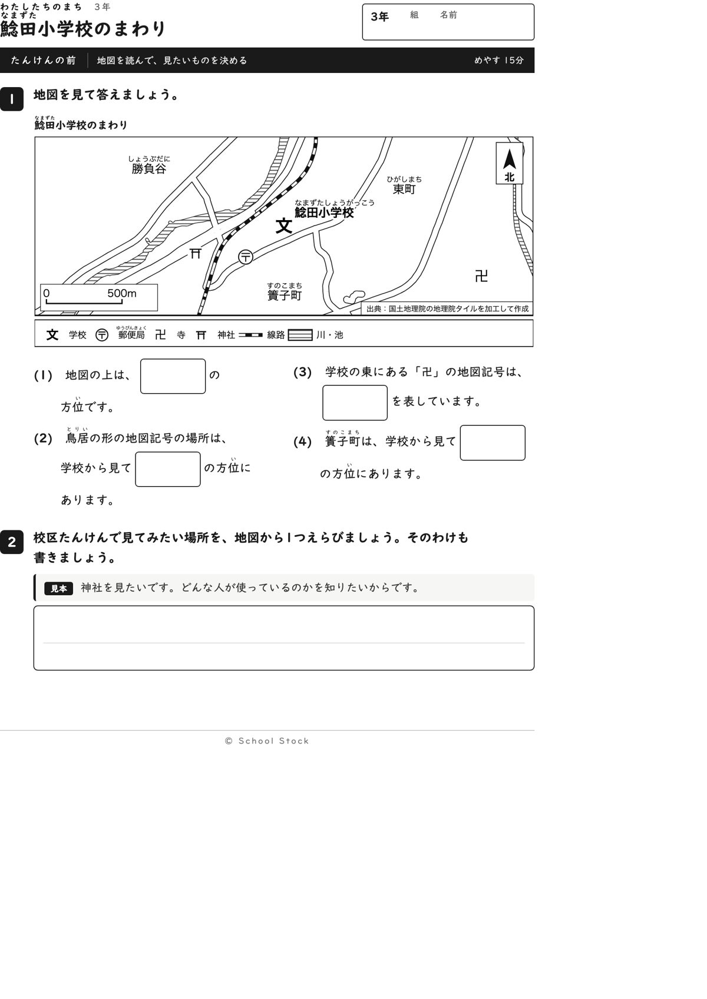
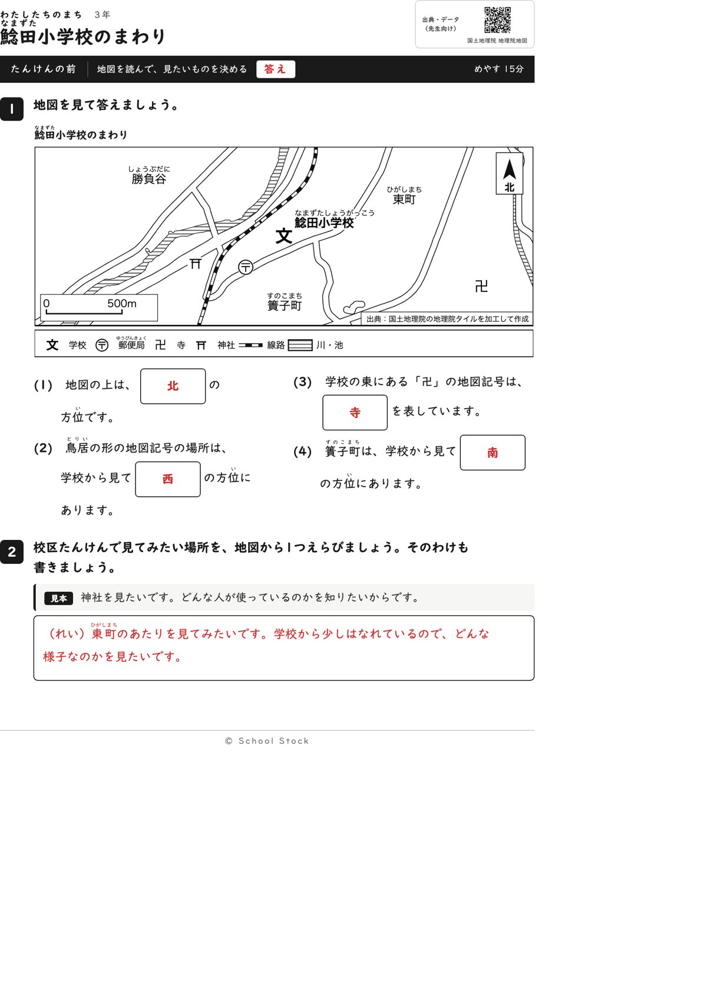
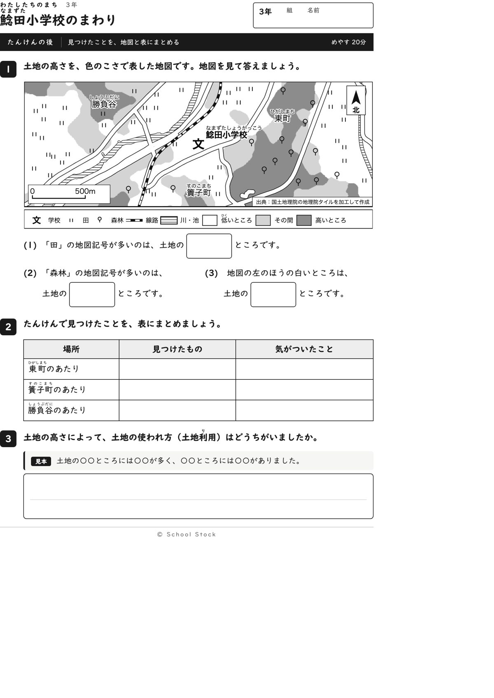
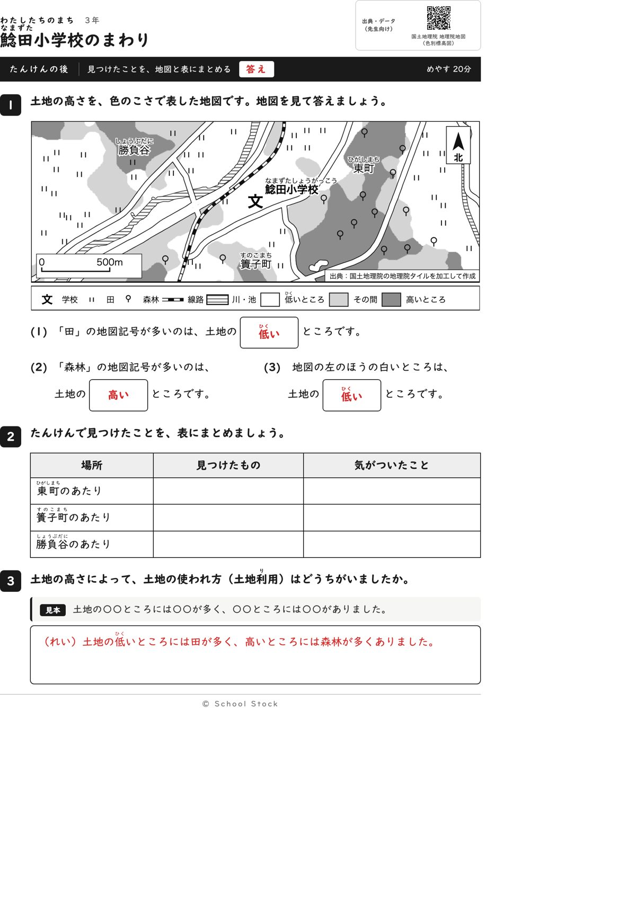
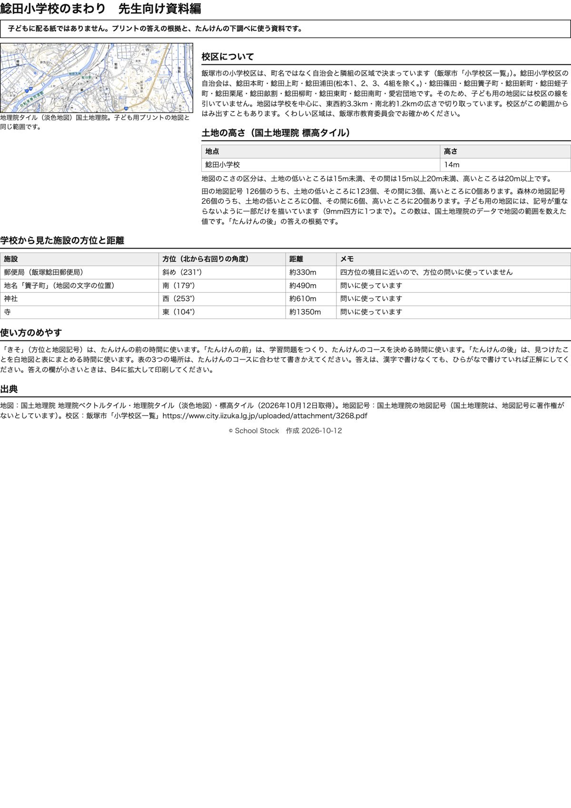

紙





直すところ
直すところはありません。
1回目のレビューで出た直し（1件・道具を直して作り直しました）
| 紙 | どこ | 何が困るか |
|---|---|---|
| たんけんの前 | (4)の問いの文（東町は、学校から見て□の方位にあります） | 町名に「東」が入っていて、地図を見なくても答えが書けます。町名と方位がたまたま一致しているだけなので、町名に方位の字が入ると方位が決まるという誤解も作ります。 |
専門家団の声（いまの紙を見て）
香月八重筆頭・全学年
簀子町は学校から見て南、という問いで、町名に答えが入らなくなりました。方位の答えは北・西・南で、ほかの問いの文には出ていません。(3)の文に東がありますが、東は答えではないので、答えの手がかりになりません。学年の範囲と順序も合っています。
日隈耕平社会
簀子町は学校の真南、鳥居は西、東の卍は寺で、地図と資料編の方位が合っています。田123個が低いところ、森林20個が高いところという数も、問いの答えと一致しています。地図の文字は重なっていません。縮尺の箱の中の文字も読めます。校区の自治会に愛宕団地が入っていることも、資料編と合っています。
藤川湊すぐ終わる子
4問とも地図を見ないと書けず、手応えがあります。たんけんの後は、見本に○○が入っているので、自分で言葉を入れて早く終わります。
田淵さくら例がないと止まる子
たんけんの後の3に見本が入ったので、書き出しで止まりません。表の最初のマスには例がありませんが、前の紙の見本と同じ型なので動けると思います。
轟大和読む前に諦める子
問いは短く、箱が文の中にあって読めます。簀子町の字を地図で探して、学校の下にあるのを見つければ書けます。表と3は書く量が多いですが、見本があれば写せます。